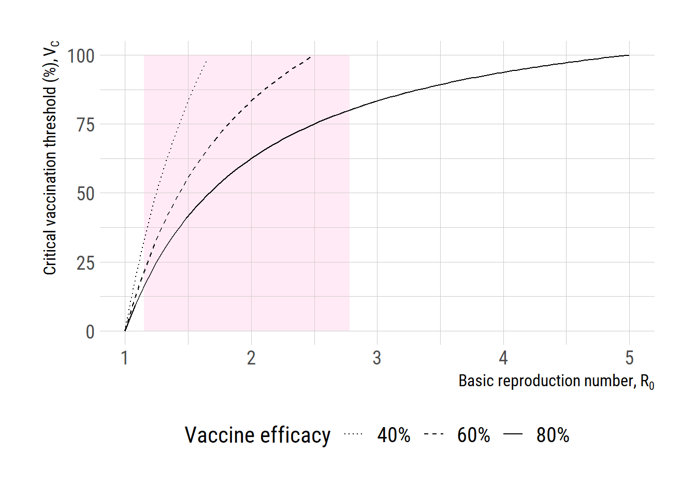

library(ggplot2)
extrafont::loadfonts("win", quiet=TRUE)
theme_set(hrbrthemes::theme_ipsum_rc(base_size=14, subtitle_size=16, axis_title_size=12))
R0 <- seq(1,5,length.out=100)
VE <- c(0.4, 0.6, 0.8)
Vc <- lapply(VE, function(x) ifelse((1-1/R0)/x <= 1.0, 100*(1-1/R0)/x, NA))
df <- data.frame(R0=R0, Vc1=Vc[[1]], Vc2=Vc[[2]], Vc3=Vc[[3]])
gg <- ggplot(df, aes(x = R0)) +
geom_rect(aes(xmin=1.15, xmax=2.78, ymin=0, ymax=max(df$Vc3)),
fill = "pink", alpha=0.01)+
geom_line(aes(y=Vc3, linetype="80%")) +
geom_line(aes(y=Vc2, linetype="60%")) +
geom_line(aes(y=Vc1, linetype="40%")) +
scale_linetype_manual("Vaccine efficacy", values=c("80%"="solid",
"60%"="dashed",
"40%"="dotted"))+
# labs(y="Critical vaccination threshold", x=expression(R[0])) +
labs(y=expression(paste("Critical vaccination threshold (%), ", V[C])),
x=expression(paste("Basic reproduction number, ", R[0]))) +
theme(text = element_text(size=16),
axis.text = element_text(size=16),
legend.text=element_text(size=15),
legend.position = "bottom")
gg
# ggsave("Vc_R0.png", gg, units="in", width=3.4*2, height=2.7*2)